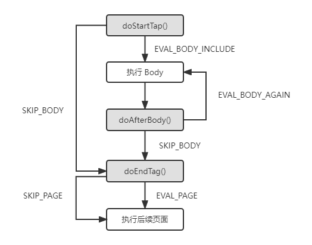
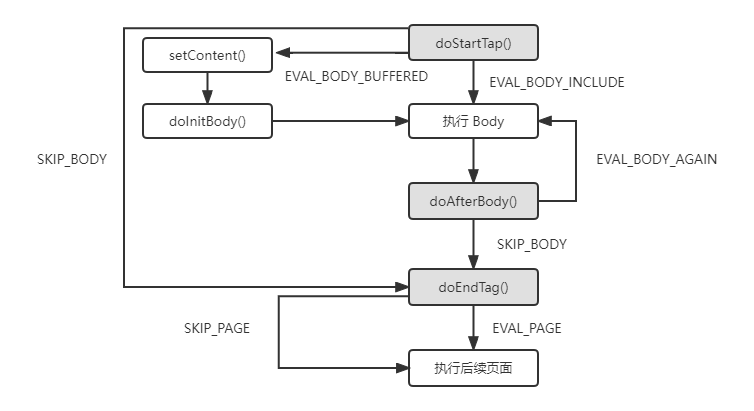

自定义标签
JSTL 是标准规范，只要符合 Servlet/JSP 标准规范的 Web 容器，就可以使用 JSTL，然而有些需求还是无法单靠 JSTL 的标签来完成，这时候就需要我们自定义标签库。自定义标签库有一般有三种方式：Tag File、Simple Tag 和 Tag 自定义标签，我们首先从最简单的 Tag file 开始。
Tag File
假如一个错误显示页面片段，它可能会在多个页面中使用，这时候我们一般都会想办法把它单独封装成一个子组件，然后再在其他页面中使用。
其中一种方式是把该页面片段单独放在一个 jsp 页面（例如：error.jsp），然后再在其他页面使用静态包含（<%include>）或者动态包含（<jsp:include>）。但这种方式扩展性较差，而且这两种标签和 HTML 标签格式出入较大，对网页开发人员来说也不够友好。
另外一种方式是使用 Tag File，这种方式和 JSTL（JSTL 就是实现了 Tag） 一样，更加接近 HTML 标签，下面示例把一个错误处理页面封装成 <html:Errors> 标签：
定义 Errors.tag 文件
<!-- 定义 Error.tag 文件，将其放到 WEB-INF/tags 目录下（也可以是其他目录） -->
<%@tag description="显示错误信息标签" body-content="scriptless" pageEncoding="UTF-8"%>
<%@attribute name="title"%>
<head>
<meta charset="UTF-8">
<link rel="stylesheet" href="css/xxx.css" type="text/css">
<title>${title}</title>
</head>
<!-- 引入 Errors 标签 -->
<%@taglib prefix="html" tagdir="WEB-INF/tags" %>
<html>
<head>...</head>
<body>
<html:Errors>
<h1>会员注册</h1>
...
</body>
Tag Fiel 标签在包含 Body 内容的时候，可以编写 HTML、EL 表达式或者自定义标签，但是不允许有 Scriptlet 脚本。例如：<html:Errors><%=request.getParameter("a")%></html:Erros> 是错误的，不过 Errors.tag 文件本身是可以使用 scriptlet 脚本的。可以在 tag 标签的 body-content 属性修改该功能：
- scriptless：body 不允许有 scriptless 相关代码。
- empty：body 不允许有任何内容。
- tadependent： body 中所有的内容都当作纯文字处理，因此可以包含 script 脚本，但是不会其作用，只会按照原来的文件进行输出。
将 Tag File 文件打包成 jar 包使用
如果想把自定义的 Tag File 标签打包成 jar 包，则有几个地方需要注意：
- 所有的 *.tag 文件必须放在 jar 包的 META-INF/tags 文件夹或者子文件夹下。
- 需要定义 TLD（Tag Library Description）文件。
- TLD 文件必须放在 jar 包的 META-INF/TLDS 文件夹下。
定义 TLD 文件
<?xml version="1.0" encoding="UTF-8"?>
<taglib version="2.1" xmlns="http://java.sun.com/xml/ns/j2ee"
xmlns:xsi="http://www.w3.org/2001/XMLSchema-instance"
xsi:schemaLocation="http://java.sun.com/xml/ns/j2eeweb-jsptaglibrary_2_1.xsd">
<tlib-version>1.0</tlib-version>
<short-name>f</short-name>
<uri>https://pers/cocoadel/jstl/tag</uri>
<tag-file>
<name>Errors</name>
<path>/META-INF/tags/Errors.tag</tag-class>
</tag-file>
</taglib>
Simple Tag
Simple Tag 的定义分三步：
- 继承 SimpleTagSupport 类。
- 定义 TLD 文件。
- 引入使用。
下面以自定义一个 if 标签为例。
继承 SimpleTagSupport 类
public class IfTag extends SimpleTagSupport{
private boolean test;//定义 test 属性
public void setTest(boolean test) {
this.test=test;
}
public void doTag() throws JspException {
if(test) {
try {
getJspBody().invoke(null);//输出 标签 body 内容。
}catch(IOException e) {
throw new JspException("IfTag 执行错误！",e);
}
}
}
}
定义 TLD 文件
TLD 文件房子 WEB-INF 文件夹下，容器会自定加载它，如果是打包成 jar 则和 Tag File 类似。
<?xml version="1.0" encoding="UTF-8"?>
<taglib version="2.1" xmlns="http://java.sun.com/xml/ns/j2ee"
xmlns:xsi="http://www.w3.org/2001/XMLSchema-instance"
xsi:schemaLocation="http://java.sun.com/xml/ns/j2eeweb-jsptaglibrary_2_1.xsd">
<tlib-version>1.0</tlib-version>
<short-name>f</short-name>
<uri>https://pers/cocoadel/jstl/tag</uri>
<tag>
<name>if</name>
<tag-class>pers.cocoadel.jstl.tag.IfTag</tag-class>
<body-content>scriptless</body-content>
<attribute>
<name>test</name> <!--属性名称 -->
<requried>true</requried><!--该属性是否必须设置 -->
<rtexprvalue>true</rtexprvalue><!--是否接收运行时计算结构，比如 EL 表达式 -->
<type>boolean</type><!-- 属性值的类型 -->
</attribute>
</tag>
</taglib>
<%@taglib prefix="f" prefix="https://pers.cocoadel/jstl/tag"%>
<html>
<body>
<f:if test="${param.password=='123'}">
<h1>登录成功</h1>
</f:if>
</body>
</html>
Tag 自定义标签
使用 Simple Tag 来实现自定标签比较简单，所要实现的内容都在 doTag 方法中进行。在大多数的情况下 Simple Tag 已经能满足自定义标签的需求。但是 Simple Tag 是 Servlet 2.0 之后才加入到标准中，如果在 Servlet 2.0 之前要实现自定义标签，只能通过 Tag 接口下的相关类的实现来完成。
Tag 的生命周期

当 JSP 中遇到 TagSupport 自定义标签的时候，会进行以下动作：
- 尝试从标签池中找到可用的标签对象，如果找到则直接使用，没有则创建一个新的标签对象。
- 调用标签处理器的 setPageContext() 方法设置 PageContext 对象。
- 如果是嵌套标签中的内层标签，则调用标签处理器的 setParent() 方法，传入外层标签处理器实例。
- 设置标签处理器属性。
- 调用标签处理器的 doStartTag() 方法，启动执行流程（执行流程如上图所示）。
- 将标签处理器对象放入标签池中以便再次使用。
重复执行标签 Body
简单来说，我们该如何实现自定义的 forEach 标签。
public class ForEachTag extends TagSupport{
private static final long serialVersionUID = 6258494991807365662L;
private String var;
private Iterator<Object> items;
public void setVar(String var) {
this.var=var;
}
public void setItems(Collection<Object> items) {
this.items=items.iterator();
}
@Override
public int doStartTag() {
if(items.hasNext()) {//测试并且执行第一次处理
this.pageContext.setAttribute(var,items.next());
return EVAL_BODY_INCLUDE;//后续调用 doAfterBody 方法。
}
return SKIP_BODY;
}
@Override
public int doAfterBody() {
if(items.hasNext()) {//测试执行后续处理
this.pageContext.setAttribute(var, items.next());
return EVAL_BODY_AGAIN;//返回该值会再次调用 doAfterBody 方法。
}
this.pageContext.removeAttribute(var);
return SKIP_BODY;//后续执行 doEndTag 方法。
}
}
处理标签 Body 运行结果
如果想在 Body 执行后，获取 Body 处理的结果，再做进一步的处理，那应该怎么做？例如实现一个将返回字符变成大写字符的标签。只是继承 TagSupport 是无法完成这个功能的，可以通过继承 BodyTagSupport 类来实现。
BodyTagSupport 在执行流程中添加了两个方法 setBodyContent 和 doInitBody 方法：

我们不需要取重写这两个新方法，只需要知道这两个方法执行后，我们可以在 doAfterTag 和 doEndTag 方法中通过 getBodyContent 取得 BodyContent对象（Writer 子对象），该对象中可以获取 Body 执行后的处理结果。下面通过 ToUpperCaseTag 作为示例来介绍其用法：
public class ToUpperCaseTag extends BodyTagSupport{
private static final long serialVersionUID = 3476090049480183957L;
@Override
public int doEndTag() throws JspException{
//获取标签 Body 运行后的结果，并且转换为大写字符
String content=getBodyContent().getString().toUpperCase();
try {
//在通过 pageContext 获取 Writer 对象，输出转换后的结果到浏览器。
pageContext.getOut().write(content);
} catch (IOException e) {
throw new JspException("ToUpperCaseTag 标签执行出错！",e);
}
return EVAL_PAGE;
}
}